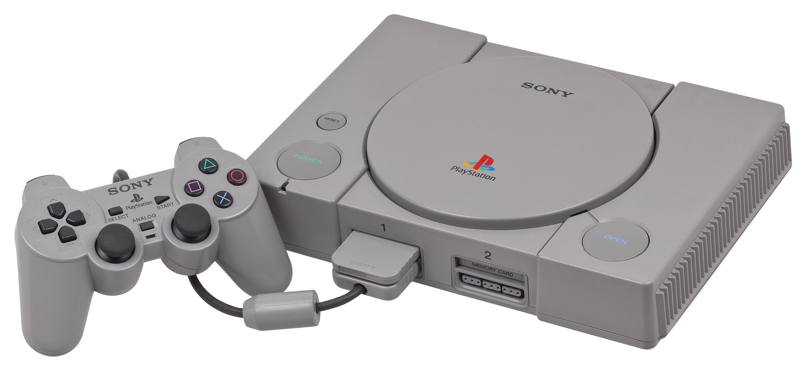

Logo Playstation
The debut emblem appeared in 1994. It is based on the artistic combination of the letters “PS” – short for PlayStation. In total, the management was presented with about 20 options, among which this one won. Its author is Japanese artist-designer Manabu Sakamoto, creator of other equally well-known Sony signs (VIAO). He proposed a three-dimensional logo, in which “P” is depicted standing, and “S” lying as if it were the shadow of the first letter. The semi-ovals are played in an interesting way, for which the upper part of “P” is left open. Overall, this is a unique combination of text, graphics, and color.
 |
Cadmium Red - #DF0024 |
| Golden Poppy - #F3C300 | |
| Persian Green - #00AC9F | |
| Celtic Blue - #2E6DB4 |
Console and controller
Console
The PlayStation is a home video game console developed and marketed by Sony Computer Entertainment. It was released in Japan on 3 December 1994, in North America on 9 September 1995, in Europe on 29 September 1995, and in Australia on 15 November 1995. As a fifth-generation console, the PlayStation primarily contended with the Nintendo 64 and the Sega Saturn.
Sony began developing the PlayStation after a failed venture with Nintendo to create a CD-ROM peripheral for the Super Nintendo Entertainment System in the early 1990s. The console was primarily designed by Ken Kutaragi and Sony Computer Entertainment in Japan, while additional development was outsourced in the United Kingdom. An emphasis on 3D polygon graphics was placed at the forefront of the console's design. PlayStation game production was designed to be streamlined and inclusive, enticing the support of many third-party developers.
The console proved popular for its extensive game library, popular franchises, low retail price, and aggressive youth marketing which advertised it as the preferable console for adolescents and adults. Premier PlayStation franchises included Gran Turismo, Crash Bandicoot, Tomb Raider, and Final Fantasy, all of which spawned numerous sequels. PlayStation games continued to sell until Sony ceased production of the PlayStation and its games on 23 March 2006—over eleven years after it had been released, and less than a year before the debut of the PlayStation 3. A total of 3,061 PlayStation games were released, with cumulative sales of 967 million units.
The PlayStation signalled Sony's rise to power in the video game industry. It received acclaim and sold strongly; in less than a decade, it became the first computer entertainment platform to ship over 100 million units. Its use of compact discs heralded the game industry's transition from cartridges. The PlayStation's success led to a line of successors, beginning with the PlayStation 2 in 2000. In the same year, Sony released a smaller and cheaper model, the PS One
Controller
The PlayStation controller is the first gamepad released by Sony Computer Entertainment for its PlayStation home video game console. The original version (model SCPH-1010) was released alongside the PlayStation on 3 December 1994. Buttons
| Buttons | |
|---|---|
| Left | L1 |
| L2 | |
| Directional Pad | |
| Middle | Select |
| Start | |
| Right | R1 |
| R2 | |
| Triangle | |
| Circle | |
| Cross | |
| Square | |